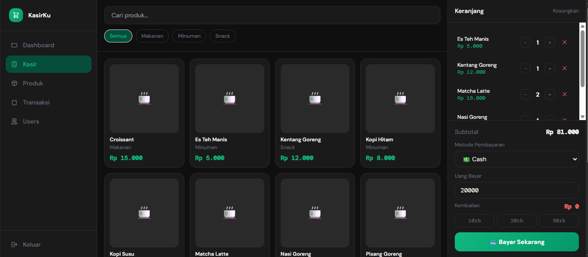

Aplikasi kasir ringan berbasis web dengan database real-time. Cocok untuk Cafe, Resto, dan UMKM yang ingin serba digital.

Satu solusi untuk semua kebutuhan manajemen operasional harian Anda.
Single-file architecture memastikan aplikasi berjalan sangat cepat tanpa loading lama.
Integrasi Supabase membuat sinkronisasi data antar perangkat terjadi dalam hitungan milidetik.
Pantau performa cafe Anda dengan grafik interaktif harian yang mudah dipahami.
UI/UX
Tailwind CSS
Backend
Supabase
Logic
Vanilla JS
Hosting
Vercel
Dibuat menggunakan teknologi terkini yang tidak memerlukan proses kompilasi berat. Deploy dalam hitungan detik, jalankan selamanya.